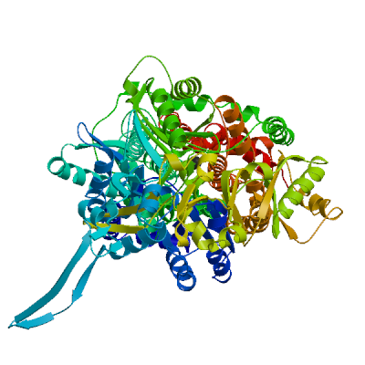
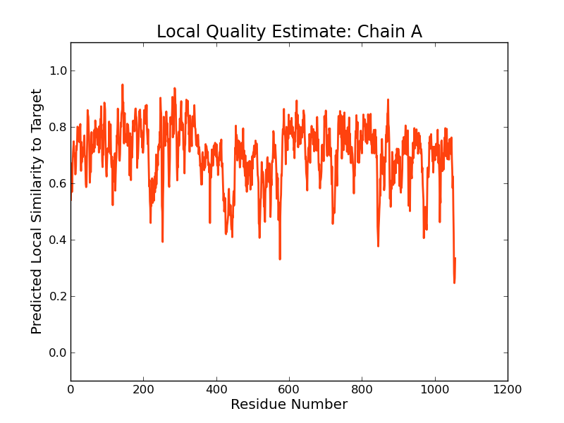
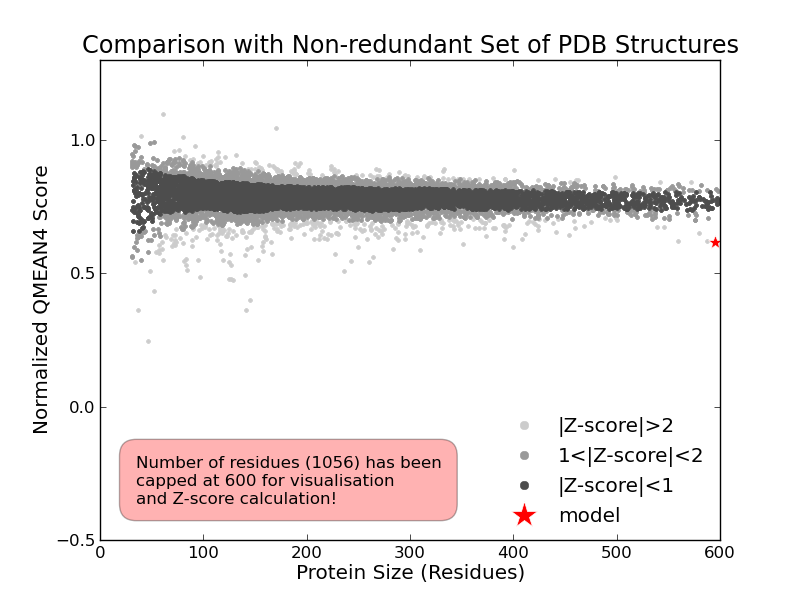
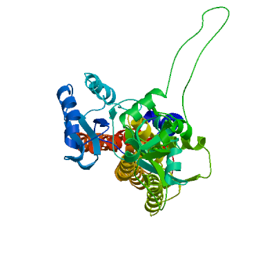
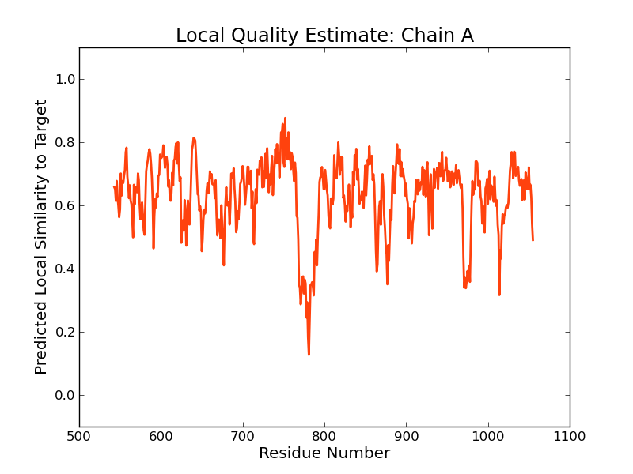
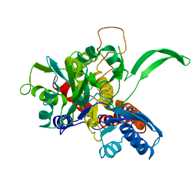
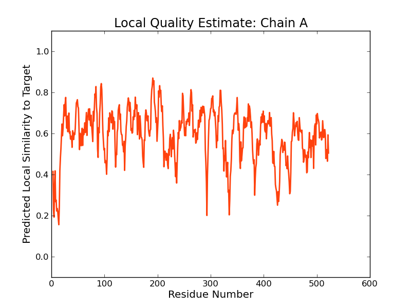
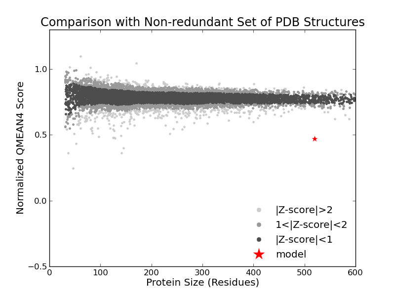

SWISS-MODEL Homology Modelling Report |
Model Building Report
This document lists the results for the homology modelling project "T451DRAFT_0206" submitted to SWISS-MODEL workspace on July 14, 2017, 9:32 p.m..The submitted primary amino acid sequence is given in Table T1.
If you use any results in your research, please cite the relevant publications:
Marco Biasini; Stefan Bienert; Andrew Waterhouse; Konstantin Arnold; Gabriel Studer; Tobias Schmidt; Florian Kiefer; Tiziano Gallo Cassarino; Martino Bertoni; Lorenza Bordoli; Torsten Schwede. (2014). SWISS-MODEL: modelling protein tertiary and quaternary structure using evolutionary information. Nucleic Acids Research (1 July 2014) 42 (W1): W252-W258; doi: 10.1093/nar/gku340.Arnold, K., Bordoli, L., Kopp, J. and Schwede, T. (2006) The SWISS-MODEL workspace: a web-based environment for protein structure homology modelling. Bioinformatics, 22, 195-201.
Benkert, P., Biasini, M. and Schwede, T. (2011) Toward the estimation of the absolute quality of individual protein structure models. Bioinformatics, 27, 343-350
Results
The SWISS-MODEL template library (SMTL version 2017-07-12, PDB release 2017-07-07) was searched with Blast (Altschul et al., 1997) and HHBlits (Remmert, et al., 2011) for evolutionary related structures matching the target sequence in Table T1. For details on the template search, see Materials and Methods. Overall 398 templates were found (Table T2).
Models
The following models were built (see Materials and Methods "Model Building"):
Model #01 | File | Built with | Oligo-State | Ligands | GMQE | QMEAN |
|---|---|---|---|---|---|---|
|  | PDB | ProMod3 Version 1.0.2. | MONOMER |
1 x CU: COPPER (II) ION; | 0.76 | -4.16 |
|  |  |
| Template | Seq Identity | Oligo-state | Found by | Method | Resolution | Seq Similarity | Range | Coverage | Description |
|---|---|---|---|---|---|---|---|---|---|
| 4dnr.1.C | 54.64 | hetero-oligomer | BLAST | X-ray | 3.68Å | 0.45 | 0.98 | Cation efflux system protein CusA |
| Ligand | Added to Model | Description | |
|---|---|---|---|
| CU | ✓ | COPPER (II) ION | |
| CU | ✕ - Binding site not conserved. | COPPER (II) ION | |
| CU | ✕ - Binding site not conserved. | COPPER (II) ION |
Target MTDFIINSALKDRFMVLLAAIILALAGLWSFKNMPLDAIPDLSDVQVIIFTDYADQSPQVIEDQVTYPLTTAMLAVPHAK
4dnr.1.C MIEWIIRRSVANRFLVLMGALFLSIWGTWTIINTPVDALPDLSDVQVIIKTSYPGQAPQIVENQVTYPLTTTMLSVPGAK
Target VVRGYSFFGLSFVYVIFEDGTDIYWARSRVLEYLNYVKGRLPQGVTPTLGPDATGVGWIYEYALVDKSGKHDLAQLRSIQ
4dnr.1.C TVRGFSQFGDSYVYVIFEDGTDPYWARSRVLEYLNQVQGKLPAGVSAELGPDATGVGWIYEYALVDRSGKHDLADLRSLQ
Target DWYLRYPLQTVSGVSEVASVGGYVKQYQVEVDPNVLQAYQIPLSTVITAIKRSNNDVGGRLFEMGETEYMVRGLGYIKSI
4dnr.1.C DWFLKYELKTIPDVAEVASVGGVVKEYQVVIDPQRLAQYGISLAEVKSALDASNQEAGGSSIELAEAEYMVRASGYLQTL
Target ADLKTIPVGVDANGTPIRLQDVSSIQIGPELRRGVTELNGEGEVAGGVVIMRFGENAQETIKDVRKKLDELKKGLPDGVE
4dnr.1.C DDFNHIVLKASENGVPVYLRDVAKVQIGPEMRRGIAELNGEGEVAGGVVILRSGKNAREVIAAVKDKLETLKSSLPEGVE
Target IVTVYDRGSLIERAVDTLNSALIQELIIVCALVALFLLHLRSSLVIIITLPLGVLMAFMVMKWQGINANIMSLGGIALAI
4dnr.1.C IVTTYDRSQLIDRAIDNLSGKLLEEFIVVAVVCALFLWHVRSALVAIISLPLGLCIAFIVMHFQGLNANIMSLGGIAIAV
Target GDMVDGAVVMVENAHKHLAEAIETKRKLIITKPSSEGEGASVELTPKERWQAIGKASQEVGSGLFFSLLVITVSFLPIIA
4dnr.1.C GAMVDAAIVMIENAHKRLEE--------------WQHQHPDATLDNKTRWQVITDASVEVGPALFISLLIITLSFIPIFT
Target MQAQEGRLFSPLAFTKSYAMAAAAILTVTLVPVLMGYFIRGKIIPEQLNPINRFLHAIHAPVLKLAMRWRALTIILAALL
4dnr.1.C LEGQEGRLFGPLAFTKTYAMAGAALLAIVVIPILMGYWIRGKIPPESSNPLNRFLIRVYHPLLLKVLHWPKTTLLVAALS
Target MASTLYPLSKIGSEFMPPLYEGDLLYMPTTFPGISITKAKELLQQTDKMLKTFPEVQQVFGKIGRAETATDAAPLMMVET
4dnr.1.C VLTVLWPLNKVGGEFLPQINEGDLLYMPSTLPGISAAEAASMLQKTDKLIMSVPEVARVFGKTGKAETATDSAPLEMVET
Target TVQLKPQDQWPDPDKTTRQLMNEMDKAIHFPGLANSWTMPIKNRIDMLSTGIKTPVGIKVAGPDLNVLQSLALQIEQAML
4dnr.1.C TIQLKPQEQW-RPGMTMDKIIEELDNTVRLPGLANLWVPPIRNRIDMLSTGIKSPIGIKVSGTVLADIDAMAEQIEEVAR
Target ALPETLSAYGDRAVGGYFLDFDINREAAARYGLTTGDVQDVIQSAIGGMNITETVEGLERYPVNVRYPRDLRDNLEALRR
4dnr.1.C TVPGVASALAFRLEGGRYINVEINREKAARYGMTVADVQLFVTSAVGGAMVGETVEGIARYPINLRYPQSWRDSPQALRQ
Target VLIPTPTGSQIPLTLVADIKFTRGTDVIKTEDARPNAWVYVDIKTSDIGGFVAQAKQTLAERVTIPAGYTVAWSGQFEYM
4dnr.1.C LPILTPMKQQITLADVADIKVSTGPSMLKTENARPTSWIYIDARDRDMVSVVHDLQKAIAEKVQLKPGTSVAFSGQFELL
Target ERAAERLTLVVPITLVLIFVLLYCAFRNITEPVIVMLTIPFSLIGGIWLVYWLGFNLSIGVYVGFIALAGTAAETGVMVL
4dnr.1.C ERANHKLKLMVPMTLMIIFVLLYLAFRRVGEALLIISSVPFALVGGIWLLWWMGFHLSVATGTGFIALAGVAAEFGVVML
Target SFIDIEIDKLRE-QKQRLLTCAEIRAASEAATALRVRPVAITSLANIVGLIPIMWATGAGADVTQRIAAPAMGGMLTVLI
4dnr.1.C MYLRHAIEAVPSLNNPQTFSEQKLDEALYHGAVLRVRPKAMTVAVIIAGLLPILWGTGAGSEVMSRIAAPMIGGMITAPL
Target LSLLVFPVIYSLV-LQFQEARKSRLI
4dnr.1.C LSLFIIPAAYKLMWLHRHRVRK----
Model #03 | File | Built with | Oligo-State | Ligands | GMQE | QMEAN |
|---|---|---|---|---|---|---|
|  | PDB | ProMod3 Version 1.0.2. | MONOMER (matching prediction) | None | 0.26 | -7.13 |
|  |
| Template | Seq Identity | Oligo-state | Found by | Method | Resolution | Seq Similarity | Range | Coverage | Description |
|---|---|---|---|---|---|---|---|---|---|
| 4zll.1.C | 12.24 | homo-trimer | HHblits | X-ray | 3.36Å | 0.28 | 0.45 | Multidrug efflux pump subunit AcrB |
Target MTDFIINSALKDRFMVLLAAIILALAGLWSFKNMPLDAIPDLSDVQVIIFTDYADQSPQVIEDQVTYPLTTAMLAVPHAK
4zll.1.C --------------------------------------------------------------------------------
Target VVRGYSFFGLSFVYVIFEDGTDIYWARSRVLEYLNYVKGRLPQGVTPTLGPDATGVGWIYEYALVDKSGKHDLAQLRSIQ
4zll.1.C --------------------------------------------------------------------------------
Target DWYLRYPLQTVSGVSEVASVGGYVKQYQVEVDPNVLQAYQIPLSTVITAIKRSNNDVGGRLFEMGETEYMVRGLGYIKSI
4zll.1.C --------------------------------------------------------------------------------
Target ADLKTIPVGVDANGTPIRLQDVSSIQIGPELRRGVTELNGEGEVAGGVVIMRFGENAQETIKDVRKKLDELKKGLPDGVE
4zll.1.C --------------------------------------------------------------------------------
Target IVTVYDRGSLIERAVDTLNSALIQELIIVCALVALFLLHLRSSLVIIITLPLGVLMAFMVMKWQGINANIMSLGGIALAI
4zll.1.C --------------------------------------------------------------------------------
Target GDMVDGAVVMVENAHKHLAEAIETKRKLIITKPSSEGEGASVELTPKERWQAIGKASQEVGSGLFFSLLVITVSFLPIIA
4zll.1.C --------------------------------------------------------------------------------
Target MQAQEGRLFSPLAFTKSYAMAAAAILTVTLVPVLMGYFIRGKIIPEQLNPINRFLHAIHAPVLKLAMRWRALTIILAALL
4zll.1.C --------------------------------------------------------------PNFFIDRPIFAWVIAIII
Target MASTLYPLSKIGSEFMPPLYEGDLLYMPTTFPGISITKAKE-LLQQTDKMLKTFPEVQQVFGKIGRAETATDAAPLMMVE
4zll.1.C MLAGGLAILKLPVAQYPTIAPPAVTISASYP-GADAKTVQDTVTQVIEQNMNGIDNLMYMSSNSDST---------GTVQ
Target TTVQLKPQDQWPDPDKTTRQLMNEMDKAIH-FPGLANSWTMPIKNRIDMLSTGIKTPVGIKVAGPD----LNVLQSLA-L
4zll.1.C ITLTFESGTD---ADIAQVQVQNKLQLAMPLLPQEVQQQGVSV------EKSSSSFLMVVGVINTDGTMTQEDISDYVAA
Target QIEQAMLALPETLSAYGDRAVGGYFLDFDINREAAARYGLTTGDVQDVIQSAIGGMNITETVEGL----ERYPVNVRYPR
4zll.1.C NMKDAISRTSGVGDVQL-FGS-QYAMRIWMNPNELNKFQLTPVDVITAIKAQNAQVAAGQLGGTPPVKGQQLNASIIAQT
Target DLRDNLEALRRVLIPTP-TGSQIPLTLVADIKFTR-GTDVIKTEDARPNAWVYVDIK-TSDIGGFVAQAKQTLAERV-TI
4zll.1.C -RLTSTEEFGKILLKVNQDGSRVLLRDVAKIELGGENYDIIAEFNGQPASGLGIKLATGANALDTAAAIRAELAKMEPFF
Target PAGYTVAWSGQFE-YMERAAERLTLVVPITLVLIFVLLYCAFRNITEPVIVMLTIPFSLIGGIWLVYWLGFNLSIGVYVG
4zll.1.C PSGLKIVYPYDTTPFVKISIHEVVKTLVEAIILVFLVMYLFLQNFRATLIPTIAVPVVLLGTFAVLAAFGFSINTLTMFG
Target FIALAGTAAETGVMVLSFIDIEIDKLREQKQRLLTCAEIRAASEAATALRVRPVAITSLANIVGLIPIMWATGAGADVTQ
4zll.1.C MVLAIGLLVDDAIVVVENVERVMAE---------EGLPPKEATRKSMGQIQGALVGIAMVLSAVFVPMAFFGGSTGAIYR
Target RIAAPAMGGMLTVLILSLLVFPVIYSLVLQFQEARKSRLI
4zll.1.C QFSITIVSAMALSVLVALILTPALCATMLKP---------
Model #02 | File | Built with | Oligo-State | Ligands | GMQE | QMEAN |
|---|---|---|---|---|---|---|
|  | PDB | ProMod3 Version 1.0.2. | MONOMER (matching prediction) | None | 0.26 | -9.14 |
|  |  |
| Template | Seq Identity | Oligo-state | Found by | Method | Resolution | Seq Similarity | Range | Coverage | Description |
|---|---|---|---|---|---|---|---|---|---|
| 3aob.1.C | 15.67 | homo-trimer | HHblits | X-ray | 3.35Å | 0.28 | 0.46 | Acriflavine resistance protein B |
| Ligand | Added to Model | Description |
|---|---|---|
| RFP | ✕ - Binding site not conserved. | RIFAMPICIN |
Target MTDFIINSALKDRFMVLLAAIILALAGLWSFKNMPLDAIPDLSDVQVIIFTDYADQSPQVIEDQVTYPLTTAML--AVPH
3aob.1.C --TDSVGGILRSTGRYLVLYLIIVVGMAYLFVRLPSSFLPDEDQGVFMTMVQLPAGATQERTQKVLNEVTHYYLTKEKNN
Target AKVVRGYSFF-------GLSFVYVIFEDGTDIY---WARSRVLEYLNYVKGRLPQGVTPTLG-PD--ATGVGWIYEYALV
3aob.1.C VESVFAVNGFGFAGRGQNTGIAFVSLKDWADRPGEENKVEAITMRATRAFSQIKDAMVFAFNLPAIVELGTATGFDFELI
Target DKSGKHDLAQLRSIQDWYLRYPLQTVSG-VSEVASVG-GYVKQYQVEVDPNVLQAYQIPLSTVITAIKRSNNDVGGRLFE
3aob.1.C DQ-AGLGHEKLTQARNQ-LLAEAAKHPDMLTSVRPNGLEDTPQFKIDIDQEKAQALGVSINDINTTLGAAWGGSYVNDFI
Target MGETEYMVRGL---GYIKSIADLKTIPVGVDANGTPIRLQDVSSIQIGPELRRGVTELNGEGEVAGGVVIMRFGENAQET
3aob.1.C DRGRVKKVYVMSEAKYRMLPDDIGDWYVRAA-DGQMVPFSAFSSSRWEYGSP-RLERYNG-LPSMEILGQAAPGKSTGEA
Target IKDVRKKLDELKKGLPDGVEIVTVYDRGSLIERAVDTLNSALIQELIIVCALVALFLLHLRSSLVIIITLPLGVLMAFMV
3aob.1.C MELMEQLASK----LPTGVGYDW-TGMSYQERLSGNQAPSLYAISLIVVFLCLAALYESWSIPFSVMLVVPLGVIGALLA
Target MKWQGINANIMSLGGIALAIGDMVDGAVVMVENAHK-HLAEAIETKRKLIITKPSSEGEGASVELTPKERWQAIGKASQE
3aob.1.C ATFRGLTNDVYFQVGLLTTIGLSAKNAILIVEFAKDLMDKE-------------------------GKGLIEATLDAVRM
Target VGSGLFFSLLVITVSFLPIIAMQAQEGRLFSPLAFTKSYAMAAAAILTVTLVPVLMGYFIRGKIIPEQLNPINRFLHAIH
3aob.1.C RLRPILMTSLAFILGVMPLVISTGAGSGAQNAVGTGVMGGMVTATVLAIFFVPVFFVVVRRRF-----------------
Target APVLKLAMRWRALTIILAALLMASTLYPLSKIGSEFMPPLYEGDLLYMPTTFPGISITKAKELLQQTDKMLKTFPEVQQV
3aob.1.C --------------------------------------------------------------------------------
Target FGKIGRAETATDAAPLMMVETTVQLKPQDQWPDPDKTTRQLMNEMDKAIHFPGLANSWTMPIKNRIDMLSTGIKTPVGIK
3aob.1.C --------------------------------------------------------------------------------
Target VAGPDLNVLQSLALQIEQAMLALPETLSAYGDRAVGGYFLDFDINREAAARYGLTTGDVQDVIQSAIGGMNITETVEGLE
3aob.1.C --------------------------------------------------------------------------------
Target RYPVNVRYPRDLRDNLEALRRVLIPTPTGSQIPLTLVADIKFTRGTDVIKTEDARPNAWVYVDIKTSDIGGFVAQAKQTL
3aob.1.C --------------------------------------------------------------------------------
Target AERVTIPAGYTVAWSGQFEYMERAAERLTLVVPITLVLIFVLLYCAFRNITEPVIVMLTIPFSLIGGIWLVYWLGFNLSI
3aob.1.C --------------------------------------------------------------------------------
Target GVYVGFIALAGTAAETGVMVLSFIDIEIDKLREQKQRLLTCAEIRAASEAATALRVRPVAITSLANIVGLIPIMWATGAG
3aob.1.C --------------------------------------------------------------------------------
Target ADVTQRIAAPAMGGMLTVLILSLLVFPVIYSLVLQFQEARKSRLI
3aob.1.C ---------------------------------------------
Materials and Methods
Template Search
Template search with Blast and HHBlits has been performed against the SWISS-MODEL template library (SMTL, last update: 2017-07-12, last included PDB release: 2017-07-07).
The target sequence was searched with BLAST (Altschul et al., 1997) against the primary amino acid sequence contained in the SMTL. A total of 128 templates were found.
An initial HHblits profile has been built using the procedure outlined in (Remmert, et al., 2011), followed by 1 iteration of HHblits against NR20. The obtained profile has then be searched against all profiles of the SMTL. A total of 270 templates were found.
Template Selection
For each identified template, the template's quality has been predicted from features of the target-template alignment. The templates with the highest quality have then been selected for model building.
Model Building
Models are built based on the target-template alignment using ProMod3. Coordinates which are conserved between the target and the template are copied from the template to the model. Insertions and deletions are remodelled using a fragment library. Side chains are then rebuilt. Finally, the geometry of the resulting model is regularized by using a force field. In case loop modelling with ProMod3 fails, an alternative model is built with PROMOD-II (Guex, et al., 1997).
Model Quality Estimation
The global and per-residue model quality has been assessed using the QMEAN scoring function (Benkert, et al., 2011) . For improved performance, weights of the individual QMEAN terms have been trained specifically for SWISS-MODEL.
Ligand Modelling
Ligands present in the template structure are transferred by homology to the model when the following criteria are met (Gallo -Casserino, to be published): (a) The ligands are annotated as biologically relevant in the template library, (b) the ligand is in contact with the model, (c) the ligand is not clashing with the protein, (d) the residues in contact with the ligand are conserved between the target and the template. If any of these four criteria is not satisfied, a certain ligand will not be included in the model. The model summary includes information on why and which ligand has not been included.
Oligomeric State Conservation
Homo-oligomeric structure of the target protein is predicted based on the analysis of pairwise interfaces of the identified template structures. For each relevant interface between polypeptide chains (interfaces with more than 10 residue-residue interactions), the QscoreOligomer (Mariani et al., 2011) is predicted from features such as similarity to target and frequency of observing this interface in the identified templates (Kiefer, Bertoni, Biasini, to be published). The prediction is performed with a random forest regressor using these features as input parameters to predict the probability of conservation for each interface. The QscoreOligomer of the whole complex is then calculated as the weight-averaged QscoreOligomer of the interfaces. The oligomeric state of the target is predicted to be the same as in the template when QscoreOligomer is predicted to be higher or equal to 0.5.
References
Altschul, S.F., Madden, T.L., Schaffer, A.A., Zhang, J., Zhang, Z., Miller, W. and Lipman, D.J. (1997) Gapped BLAST and PSI-BLAST: a new generation of protein database search programs. Nucleic Acids Res, 25, 3389-3402.
Remmert, M., Biegert, A., Hauser, A. and Soding, J. (2012) HHblits: lightning-fast iterative protein sequence searching by HMM-HMM alignment. Nat Methods, 9, 173-175.
Guex, N. and Peitsch, M.C. (1997) SWISS-MODEL and the Swiss-PdbViewer: an environment for comparative protein modeling. Electrophoresis, 18, 2714-2723.
Sali, A. and Blundell, T.L. (1993) Comparative protein modelling by satisfaction of spatial restraints. J Mol Biol, 234, 779-815.
Benkert, P., Biasini, M. and Schwede, T. (2011) Toward the estimation of the absolute quality of individual protein structure models. Bioinformatics, 27, 343-350.
Mariani, V., Kiefer, F., Schmidt, T., Haas, J. and Schwede, T. (2011) Assessment of template based protein structure predictions in CASP9. Proteins, 79 Suppl 10, 37-58.
Table T1:
Primary amino acid sequence for which templates were searched and models were built.
TDIYWARSRVLEYLNYVKGRLPQGVTPTLGPDATGVGWIYEYALVDKSGKHDLAQLRSIQDWYLRYPLQTVSGVSEVASVGGYVKQYQVEVDPNVLQAYQ
IPLSTVITAIKRSNNDVGGRLFEMGETEYMVRGLGYIKSIADLKTIPVGVDANGTPIRLQDVSSIQIGPELRRGVTELNGEGEVAGGVVIMRFGENAQET
IKDVRKKLDELKKGLPDGVEIVTVYDRGSLIERAVDTLNSALIQELIIVCALVALFLLHLRSSLVIIITLPLGVLMAFMVMKWQGINANIMSLGGIALAI
GDMVDGAVVMVENAHKHLAEAIETKRKLIITKPSSEGEGASVELTPKERWQAIGKASQEVGSGLFFSLLVITVSFLPIIAMQAQEGRLFSPLAFTKSYAM
AAAAILTVTLVPVLMGYFIRGKIIPEQLNPINRFLHAIHAPVLKLAMRWRALTIILAALLMASTLYPLSKIGSEFMPPLYEGDLLYMPTTFPGISITKAK
ELLQQTDKMLKTFPEVQQVFGKIGRAETATDAAPLMMVETTVQLKPQDQWPDPDKTTRQLMNEMDKAIHFPGLANSWTMPIKNRIDMLSTGIKTPVGIKV
AGPDLNVLQSLALQIEQAMLALPETLSAYGDRAVGGYFLDFDINREAAARYGLTTGDVQDVIQSAIGGMNITETVEGLERYPVNVRYPRDLRDNLEALRR
VLIPTPTGSQIPLTLVADIKFTRGTDVIKTEDARPNAWVYVDIKTSDIGGFVAQAKQTLAERVTIPAGYTVAWSGQFEYMERAAERLTLVVPITLVLIFV
LLYCAFRNITEPVIVMLTIPFSLIGGIWLVYWLGFNLSIGVYVGFIALAGTAAETGVMVLSFIDIEIDKLREQKQRLLTCAEIRAASEAATALRVRPVAI
TSLANIVGLIPIMWATGAGADVTQRIAAPAMGGMLTVLILSLLVFPVIYSLVLQFQEARKSRLI
Table T2:
| Template | Seq Identity | Oligo-state | Found by | Method | Resolution | Seq Similarity | Coverage | Description |
|---|---|---|---|---|---|---|---|---|
| 3k07.1.A | 54.64 | homo-trimer | BLAST | X-ray | 3.52Å | 0.46 | 0.98 | Cation efflux system protein cusA |
| 3k0i.1.A | 54.64 | homo-trimer | BLAST | X-ray | 4.12Å | 0.46 | 0.98 | Cation efflux system protein cusA |
| 3kso.1.A | 54.64 | homo-trimer | BLAST | X-ray | 4.37Å | 0.46 | 0.98 | Cation efflux system protein cusA |
| 3kss.1.A | 54.64 | homo-trimer | BLAST | X-ray | 3.88Å | 0.46 | 0.98 | Cation efflux system protein cusA |
| 3t51.1.C | 54.64 | hetero-oligomer | BLAST | X-ray | 3.90Å | 0.46 | 0.98 | Cation efflux system protein CusA |
| 3t56.1.A | 54.64 | hetero-oligomer | BLAST | X-ray | 3.42Å | 0.46 | 0.98 | Cation efflux system protein CusA |
| 3t53.1.C | 54.64 | hetero-oligomer | BLAST | X-ray | 3.37Å | 0.46 | 0.98 | Cation efflux system protein CusA |
| 4dnr.1.C | 54.64 | hetero-oligomer | BLAST | X-ray | 3.68Å | 0.45 | 0.98 | Cation efflux system protein CusA |
| 4dop.1.C | 54.55 | hetero-oligomer | BLAST | X-ray | 4.20Å | 0.45 | 0.98 | Cation efflux system protein CusA |
| 4dnt.1.C | 54.55 | hetero-oligomer | BLAST | X-ray | 3.10Å | 0.45 | 0.98 | Cation efflux system protein CusA |
| 3ne5.1.C | 54.65 | hetero-oligomer | BLAST | X-ray | 2.90Å | 0.46 | 0.98 | Cation efflux system protein cusA |
| 3k07.1.A | 54.41 | homo-trimer | HHblits | X-ray | 3.52Å | 0.45 | 0.98 | Cation efflux system protein cusA |
| 3k0i.1.A | 54.41 | homo-trimer | HHblits | X-ray | 4.12Å | 0.45 | 0.98 | Cation efflux system protein cusA |
| 3kso.1.A | 54.41 | homo-trimer | HHblits | X-ray | 4.37Å | 0.45 | 0.98 | Cation efflux system protein cusA |
| 3kss.1.A | 54.41 | homo-trimer | HHblits | X-ray | 3.88Å | 0.45 | 0.98 | Cation efflux system protein cusA |
| 4dnt.1.C | 54.32 | hetero-oligomer | HHblits | X-ray | 3.10Å | 0.45 | 0.98 | Cation efflux system protein CusA |
| 4dnr.1.C | 54.52 | hetero-oligomer | HHblits | X-ray | 3.68Å | 0.45 | 0.98 | Cation efflux system protein CusA |
| 3t51.1.C | 54.27 | hetero-oligomer | HHblits | X-ray | 3.90Å | 0.45 | 0.98 | Cation efflux system protein CusA |
| 3t56.1.A | 54.27 | hetero-oligomer | HHblits | X-ray | 3.42Å | 0.45 | 0.98 | Cation efflux system protein CusA |
| 3t53.1.C | 54.27 | hetero-oligomer | HHblits | X-ray | 3.37Å | 0.45 | 0.98 | Cation efflux system protein CusA |
| 4dop.1.C | 54.28 | hetero-oligomer | HHblits | X-ray | 4.20Å | 0.45 | 0.98 | Cation efflux system protein CusA |
| 3ne5.1.C | 54.34 | hetero-oligomer | HHblits | X-ray | 2.90Å | 0.45 | 0.98 | Cation efflux system protein cusA |
| 4k0j.1.A | 31.34 | homo-trimer | BLAST | X-ray | 3.00Å | 0.36 | 0.96 | Heavy metal cation tricomponent efflux pump ZneA(CzcA-like) |
| 4k0j.1.B | 31.34 | homo-trimer | BLAST | X-ray | 3.00Å | 0.36 | 0.96 | Heavy metal cation tricomponent efflux pump ZneA(CzcA-like) |
| 4k0j.1.C | 31.34 | homo-trimer | BLAST | X-ray | 3.00Å | 0.36 | 0.96 | Heavy metal cation tricomponent efflux pump ZneA(CzcA-like) |
| 4k0e.1.C | 31.34 | homo-trimer | BLAST | X-ray | 3.71Å | 0.36 | 0.96 | Heavy metal cation tricomponent efflux pump ZneA(CzcA-like) |
| 4k0e.1.B | 31.34 | homo-trimer | BLAST | X-ray | 3.71Å | 0.36 | 0.96 | Heavy metal cation tricomponent efflux pump ZneA(CzcA-like) |
| 4k0e.1.A | 31.34 | homo-trimer | BLAST | X-ray | 3.71Å | 0.36 | 0.96 | Heavy metal cation tricomponent efflux pump ZneA(CzcA-like) |
| 4k0j.1.A | 30.53 | homo-trimer | HHblits | X-ray | 3.00Å | 0.36 | 0.95 | Heavy metal cation tricomponent efflux pump ZneA(CzcA-like) |
| 4k0j.1.B | 30.53 | homo-trimer | HHblits | X-ray | 3.00Å | 0.36 | 0.95 | Heavy metal cation tricomponent efflux pump ZneA(CzcA-like) |
| 4k0j.1.C | 30.53 | homo-trimer | HHblits | X-ray | 3.00Å | 0.36 | 0.95 | Heavy metal cation tricomponent efflux pump ZneA(CzcA-like) |
| 4k0e.1.C | 30.53 | homo-trimer | HHblits | X-ray | 3.71Å | 0.36 | 0.95 | Heavy metal cation tricomponent efflux pump ZneA(CzcA-like) |
| 4k0e.1.B | 30.53 | homo-trimer | HHblits | X-ray | 3.71Å | 0.36 | 0.95 | Heavy metal cation tricomponent efflux pump ZneA(CzcA-like) |
| 4k0e.1.A | 30.53 | homo-trimer | HHblits | X-ray | 3.71Å | 0.36 | 0.95 | Heavy metal cation tricomponent efflux pump ZneA(CzcA-like) |
| 4u8v.1.A | 20.36 | hetero-oligomer | HHblits | X-ray | 2.30Å | 0.31 | 0.95 | Multidrug efflux pump subunit AcrB |
| 4u8v.1.B | 20.36 | hetero-oligomer | HHblits | X-ray | 2.30Å | 0.31 | 0.95 | Multidrug efflux pump subunit AcrB |
| 4u8v.1.C | 20.36 | hetero-oligomer | HHblits | X-ray | 2.30Å | 0.31 | 0.95 | Multidrug efflux pump subunit AcrB |
| 2j8s.1.A | 20.47 | hetero-oligomer | HHblits | X-ray | 2.54Å | 0.31 | 0.95 | ACRIFLAVINE RESISTANCE PROTEIN B |
| 2j8s.1.B | 20.47 | hetero-oligomer | HHblits | X-ray | 2.54Å | 0.31 | 0.95 | ACRIFLAVINE RESISTANCE PROTEIN B |
| 2j8s.1.C | 20.47 | hetero-oligomer | HHblits | X-ray | 2.54Å | 0.31 | 0.95 | ACRIFLAVINE RESISTANCE PROTEIN B |
| 4u95.1.A | 20.59 | hetero-oligomer | HHblits | X-ray | 2.00Å | 0.31 | 0.95 | Multidrug efflux pump subunit AcrB |
| 4u95.1.B | 20.59 | hetero-oligomer | HHblits | X-ray | 2.00Å | 0.31 | 0.95 | Multidrug efflux pump subunit AcrB |
| 4u95.1.C | 20.59 | hetero-oligomer | HHblits | X-ray | 2.00Å | 0.31 | 0.95 | Multidrug efflux pump subunit AcrB |
| 4zll.1.C | 20.59 | homo-trimer | HHblits | X-ray | 3.36Å | 0.31 | 0.95 | Multidrug efflux pump subunit AcrB |
| 4ziv.1.B | 20.59 | homo-trimer | HHblits | X-ray | 3.16Å | 0.31 | 0.95 | Multidrug efflux pump subunit AcrB |
| 4ziv.1.C | 20.59 | homo-trimer | HHblits | X-ray | 3.16Å | 0.31 | 0.95 | Multidrug efflux pump subunit AcrB |
| 4ziv.1.A | 20.59 | homo-trimer | HHblits | X-ray | 3.16Å | 0.31 | 0.95 | Multidrug efflux pump subunit AcrB |
| 4ziv.2.A | 20.59 | homo-trimer | HHblits | X-ray | 3.16Å | 0.31 | 0.95 | Multidrug efflux pump subunit AcrB |
| 4ziv.2.B | 20.59 | homo-trimer | HHblits | X-ray | 3.16Å | 0.31 | 0.95 | Multidrug efflux pump subunit AcrB |
| 4zjo.2.C | 20.59 | homo-trimer | HHblits | X-ray | 3.60Å | 0.31 | 0.95 | Multidrug efflux pump subunit AcrB |
| 4dx6.1.A | 20.47 | hetero-oligomer | HHblits | X-ray | 2.90Å | 0.31 | 0.95 | Acriflavine resistance protein B |
| 4dx6.1.B | 20.47 | hetero-oligomer | HHblits | X-ray | 2.90Å | 0.31 | 0.95 | Acriflavine resistance protein B |
| 4dx6.1.C | 20.47 | hetero-oligomer | HHblits | X-ray | 2.90Å | 0.31 | 0.95 | Acriflavine resistance protein B |
| 2hqg.1.A | 20.38 | homo-trimer | HHblits | X-ray | 3.38Å | 0.31 | 0.95 | Acriflavine resistance protein B |
| 3w9i.1.A | 20.73 | homo-trimer | HHblits | X-ray | 2.71Å | 0.31 | 0.95 | Multidrug resistance protein MexB |
| 3w9i.1.B | 20.73 | homo-trimer | HHblits | X-ray | 2.71Å | 0.31 | 0.95 | Multidrug resistance protein MexB |
| 3w9i.1.C | 20.73 | homo-trimer | HHblits | X-ray | 2.71Å | 0.31 | 0.95 | Multidrug resistance protein MexB |
| 2v50.1.A | 20.73 | homo-trimer | HHblits | X-ray | 3.00Å | 0.31 | 0.95 | MULTIDRUG RESISTANCE PROTEIN MEXB |
| 2v50.1.B | 20.73 | homo-trimer | HHblits | X-ray | 3.00Å | 0.31 | 0.95 | MULTIDRUG RESISTANCE PROTEIN MEXB |
| 2v50.1.C | 20.73 | homo-trimer | HHblits | X-ray | 3.00Å | 0.31 | 0.95 | MULTIDRUG RESISTANCE PROTEIN MEXB |
| 3w9j.2.A | 20.73 | homo-trimer | HHblits | X-ray | 3.15Å | 0.31 | 0.95 | Multidrug resistance protein MexB |
| 3w9j.2.C | 20.73 | homo-trimer | HHblits | X-ray | 3.15Å | 0.31 | 0.95 | Multidrug resistance protein MexB |
| 3w9j.2.B | 20.73 | homo-trimer | HHblits | X-ray | 3.15Å | 0.31 | 0.95 | Multidrug resistance protein MexB |
| 2hqf.1.A | 20.50 | homo-trimer | HHblits | X-ray | 3.38Å | 0.31 | 0.95 | Acriflavine resistance protein B |
| 4c48.1.A | 20.61 | hetero-oligomer | HHblits | X-ray | 3.30Å | 0.31 | 0.95 | ACRIFLAVINE RESISTANCE PROTEIN B |
| 2hrt.1.A | 20.61 | homo-trimer | HHblits | X-ray | 3.00Å | 0.31 | 0.95 | Acriflavine resistance protein B |
| 2hrt.1.B | 20.61 | homo-trimer | HHblits | X-ray | 3.00Å | 0.31 | 0.95 | Acriflavine resistance protein B |
| 2hrt.1.C | 20.61 | homo-trimer | HHblits | X-ray | 3.00Å | 0.31 | 0.95 | Acriflavine resistance protein B |
| 4dx7.1.B | 20.61 | hetero-oligomer | HHblits | X-ray | 2.25Å | 0.31 | 0.95 | Acriflavine resistance protein B |
| 4dx5.1.A | 20.61 | hetero-oligomer | HHblits | X-ray | 1.90Å | 0.31 | 0.95 | Acriflavine resistance protein B |
| 4dx7.1.C | 20.61 | hetero-oligomer | HHblits | X-ray | 2.25Å | 0.31 | 0.95 | Acriflavine resistance protein B |
| 2hqc.1.A | 20.40 | homo-trimer | HHblits | X-ray | 3.56Å | 0.31 | 0.95 | Acriflavine resistance protein B |
| 2hqd.1.A | 20.52 | homo-trimer | HHblits | X-ray | 3.65Å | 0.31 | 0.95 | Acriflavine resistance protein B |
| 1iwg.1.A | 20.52 | homo-trimer | HHblits | X-ray | 3.50Å | 0.31 | 0.95 | AcrB |
| 2dhh.1.A | 20.52 | homo-trimer | HHblits | X-ray | 2.80Å | 0.31 | 0.95 | ACRB |
| 2dhh.1.B | 20.52 | homo-trimer | HHblits | X-ray | 2.80Å | 0.31 | 0.95 | ACRB |
| 2dhh.1.C | 20.52 | homo-trimer | HHblits | X-ray | 2.80Å | 0.31 | 0.95 | ACRB |
| 2dr6.1.A | 20.52 | homo-trimer | HHblits | X-ray | 3.30Å | 0.31 | 0.95 | ACRB |
| 3aob.1.C | 20.52 | homo-trimer | HHblits | X-ray | 3.35Å | 0.31 | 0.95 | Acriflavine resistance protein B |
| 3aod.1.A | 20.52 | homo-trimer | HHblits | X-ray | 3.30Å | 0.31 | 0.95 | Acriflavine resistance protein B |
| 3aob.1.B | 20.52 | homo-trimer | HHblits | X-ray | 3.35Å | 0.31 | 0.95 | Acriflavine resistance protein B |
| 3aoc.1.C | 20.52 | homo-trimer | HHblits | X-ray | 3.34Å | 0.31 | 0.95 | Acriflavine resistance protein B |
| 3aoa.1.A | 20.52 | homo-trimer | HHblits | X-ray | 3.35Å | 0.31 | 0.95 | Acriflavine resistance protein B |
| 3aoc.1.B | 20.52 | homo-trimer | HHblits | X-ray | 3.34Å | 0.31 | 0.95 | Acriflavine resistance protein B |
| 3aoa.1.C | 20.52 | homo-trimer | HHblits | X-ray | 3.35Å | 0.31 | 0.95 | Acriflavine resistance protein B |
| 3aoa.1.B | 20.52 | homo-trimer | HHblits | X-ray | 3.35Å | 0.31 | 0.95 | Acriflavine resistance protein B |
| 3aoc.1.A | 20.52 | homo-trimer | HHblits | X-ray | 3.34Å | 0.31 | 0.95 | Acriflavine resistance protein B |
| 3aod.1.B | 20.52 | homo-trimer | HHblits | X-ray | 3.30Å | 0.31 | 0.95 | Acriflavine resistance protein B |
| 3aod.1.C | 20.52 | homo-trimer | HHblits | X-ray | 3.30Å | 0.31 | 0.95 | Acriflavine resistance protein B |
| 4u8y.1.A | 20.52 | hetero-oligomer | HHblits | X-ray | 2.10Å | 0.31 | 0.95 | Multidrug efflux pump subunit AcrB |
| 4u8y.1.B | 20.52 | hetero-oligomer | HHblits | X-ray | 2.10Å | 0.31 | 0.95 | Multidrug efflux pump subunit AcrB |
| 4u8y.1.C | 20.52 | hetero-oligomer | HHblits | X-ray | 2.10Å | 0.31 | 0.95 | Multidrug efflux pump subunit AcrB |
| 1t9t.1.A | 20.52 | monomer | HHblits | X-ray | 3.23Å | 0.31 | 0.95 | Acriflavine resistance protein B |
| 4u96.1.A | 20.42 | hetero-oligomer | HHblits | X-ray | 2.20Å | 0.31 | 0.95 | Multidrug efflux pump subunit AcrB |
| 4u96.1.B | 20.42 | hetero-oligomer | HHblits | X-ray | 2.20Å | 0.31 | 0.95 | Multidrug efflux pump subunit AcrB |
| 4u96.1.C | 20.42 | hetero-oligomer | HHblits | X-ray | 2.20Å | 0.31 | 0.95 | Multidrug efflux pump subunit AcrB |
| 1oy6.1.A | 20.54 | homo-trimer | HHblits | X-ray | 3.68Å | 0.31 | 0.95 | Acriflavine resistance protein B |
| 2w1b.1.A | 20.54 | homo-trimer | HHblits | X-ray | 3.85Å | 0.31 | 0.95 | ACRIFLAVIN RESISTANCE PROTEIN B |
| 2rdd.1.A | 20.54 | hetero-oligomer | HHblits | X-ray | 3.50Å | 0.31 | 0.95 | Acriflavine resistance protein B |
| 2i6w.1.A | 20.54 | homo-trimer | HHblits | X-ray | 3.10Å | 0.31 | 0.95 | Acriflavine resistance protein B |
| 3noc.1.A | 20.54 | hetero-oligomer | HHblits | X-ray | 2.70Å | 0.31 | 0.95 | Acriflavine resistance protein B |
| 3noc.1.B | 20.54 | hetero-oligomer | HHblits | X-ray | 2.70Å | 0.31 | 0.95 | Acriflavine resistance protein B |
| 3noc.1.C | 20.54 | hetero-oligomer | HHblits | X-ray | 2.70Å | 0.31 | 0.95 | Acriflavine resistance protein B |
| 3nog.1.A | 20.54 | hetero-oligomer | HHblits | X-ray | 3.34Å | 0.31 | 0.95 | Acriflavine resistance protein B |
| 3nog.1.B | 20.54 | hetero-oligomer | HHblits | X-ray | 3.34Å | 0.31 | 0.95 | Acriflavine resistance protein B |
| 3nog.1.C | 20.54 | hetero-oligomer | HHblits | X-ray | 3.34Å | 0.31 | 0.95 | Acriflavine resistance protein B |
| 3d9b.1.A | 20.54 | homo-trimer | HHblits | X-ray | 3.42Å | 0.31 | 0.95 | Acriflavine resistance protein B |
| 4cdi.1.E | 20.54 | hetero-oligomer | HHblits | X-ray | 3.70Å | 0.31 | 0.95 | ACRIFLAVINE RESISTANCE PROTEIN B |
| 4zit.1.A | 20.54 | homo-trimer | HHblits | X-ray | 3.30Å | 0.31 | 0.95 | Multidrug efflux pump subunit AcrB |
| 4zit.1.B | 20.54 | homo-trimer | HHblits | X-ray | 3.30Å | 0.31 | 0.95 | Multidrug efflux pump subunit AcrB |
| 4zit.1.C | 20.54 | homo-trimer | HHblits | X-ray | 3.30Å | 0.31 | 0.95 | Multidrug efflux pump subunit AcrB |
| 4zjl.2.A | 20.54 | homo-trimer | HHblits | X-ray | 3.47Å | 0.31 | 0.95 | Multidrug efflux pump subunit AcrB |
| 5nc5.1.B | 20.54 | hetero-oligomer | HHblits | X-ray | 3.20Å | 0.31 | 0.95 | Multidrug efflux pump subunit AcrB |
| 5ng5.1.O | 20.54 | hetero-oligomer | HHblits | EM | NA | 0.31 | 0.95 | Multidrug efflux pump subunit AcrB |
| 5ng5.1.J | 20.54 | hetero-oligomer | HHblits | EM | NA | 0.31 | 0.95 | Multidrug efflux pump subunit AcrB |
| 5ng5.1.K | 20.54 | hetero-oligomer | HHblits | EM | NA | 0.31 | 0.95 | Multidrug efflux pump subunit AcrB |
| 5o66.1.J | 20.54 | hetero-oligomer | HHblits | EM | NA | 0.31 | 0.95 | Multidrug efflux pump subunit AcrB |
| 5o66.1.L | 20.54 | hetero-oligomer | HHblits | EM | NA | 0.31 | 0.95 | Multidrug efflux pump subunit AcrB |
| 5v5s.1.J | 20.54 | hetero-oligomer | HHblits | EM | NA | 0.31 | 0.95 | Multidrug efflux pump subunit AcrB |
| 4mt1.1.A | 20.90 | homo-trimer | HHblits | X-ray | 3.54Å | 0.31 | 0.94 | Drug efflux protein |
| 3w9h.1.A | 20.62 | homo-trimer | HHblits | X-ray | 3.05Å | 0.31 | 0.94 | Acriflavine resistance protein B |
| 3w9h.1.B | 20.62 | homo-trimer | HHblits | X-ray | 3.05Å | 0.31 | 0.94 | Acriflavine resistance protein B |
| 3w9h.1.C | 20.62 | homo-trimer | HHblits | X-ray | 3.05Å | 0.31 | 0.94 | Acriflavine resistance protein B |
| 4zln.1.A | 20.64 | homo-trimer | HHblits | X-ray | 3.56Å | 0.31 | 0.94 | Multidrug efflux pump subunit AcrB |
| 4ziw.1.C | 20.64 | homo-trimer | HHblits | X-ray | 3.40Å | 0.31 | 0.94 | Multidrug efflux pump subunit AcrB |
| 4ziw.2.A | 20.64 | homo-trimer | HHblits | X-ray | 3.40Å | 0.31 | 0.94 | Multidrug efflux pump subunit AcrB |
| 4ziw.2.B | 20.64 | homo-trimer | HHblits | X-ray | 3.40Å | 0.31 | 0.94 | Multidrug efflux pump subunit AcrB |
| 4ziw.2.C | 20.64 | homo-trimer | HHblits | X-ray | 3.40Å | 0.31 | 0.94 | Multidrug efflux pump subunit AcrB |
| 4ziw.1.B | 20.64 | homo-trimer | HHblits | X-ray | 3.40Å | 0.31 | 0.94 | Multidrug efflux pump subunit AcrB |
| 4ziw.1.A | 20.64 | homo-trimer | HHblits | X-ray | 3.40Å | 0.31 | 0.94 | Multidrug efflux pump subunit AcrB |
| 4zjq.2.A | 20.64 | homo-trimer | HHblits | X-ray | 3.59Å | 0.31 | 0.94 | Multidrug efflux pump subunit AcrB |
| 4mt1.1.A | 24.43 | homo-trimer | BLAST | X-ray | 3.54Å | 0.33 | 0.91 | Drug efflux protein |
| 3w9i.1.A | 24.95 | homo-trimer | BLAST | X-ray | 2.71Å | 0.33 | 0.90 | Multidrug resistance protein MexB |
| 3w9i.1.B | 24.95 | homo-trimer | BLAST | X-ray | 2.71Å | 0.33 | 0.90 | Multidrug resistance protein MexB |
| 3w9i.1.C | 24.95 | homo-trimer | BLAST | X-ray | 2.71Å | 0.33 | 0.90 | Multidrug resistance protein MexB |
| 2v50.1.A | 24.95 | homo-trimer | BLAST | X-ray | 3.00Å | 0.33 | 0.90 | MULTIDRUG RESISTANCE PROTEIN MEXB |
| 2v50.1.B | 24.95 | homo-trimer | BLAST | X-ray | 3.00Å | 0.33 | 0.90 | MULTIDRUG RESISTANCE PROTEIN MEXB |
| 2v50.1.C | 24.95 | homo-trimer | BLAST | X-ray | 3.00Å | 0.33 | 0.90 | MULTIDRUG RESISTANCE PROTEIN MEXB |
| 3w9j.2.A | 24.95 | homo-trimer | BLAST | X-ray | 3.15Å | 0.33 | 0.90 | Multidrug resistance protein MexB |
| 3w9j.2.C | 24.95 | homo-trimer | BLAST | X-ray | 3.15Å | 0.33 | 0.90 | Multidrug resistance protein MexB |
| 3w9j.2.B | 24.95 | homo-trimer | BLAST | X-ray | 3.15Å | 0.33 | 0.90 | Multidrug resistance protein MexB |
| 4zln.1.A | 24.16 | homo-trimer | BLAST | X-ray | 3.56Å | 0.33 | 0.89 | Multidrug efflux pump subunit AcrB |
| 4ziw.1.C | 24.16 | homo-trimer | BLAST | X-ray | 3.40Å | 0.33 | 0.89 | Multidrug efflux pump subunit AcrB |
| 4ziw.2.A | 24.16 | homo-trimer | BLAST | X-ray | 3.40Å | 0.33 | 0.89 | Multidrug efflux pump subunit AcrB |
| 4ziw.2.B | 24.16 | homo-trimer | BLAST | X-ray | 3.40Å | 0.33 | 0.89 | Multidrug efflux pump subunit AcrB |
| 4ziw.2.C | 24.16 | homo-trimer | BLAST | X-ray | 3.40Å | 0.33 | 0.89 | Multidrug efflux pump subunit AcrB |
| 4ziw.1.B | 24.16 | homo-trimer | BLAST | X-ray | 3.40Å | 0.33 | 0.89 | Multidrug efflux pump subunit AcrB |
| 4ziw.1.A | 24.16 | homo-trimer | BLAST | X-ray | 3.40Å | 0.33 | 0.89 | Multidrug efflux pump subunit AcrB |
| 4zjq.2.A | 24.16 | homo-trimer | BLAST | X-ray | 3.59Å | 0.33 | 0.89 | Multidrug efflux pump subunit AcrB |
| 2hqd.1.A | 24.42 | homo-trimer | BLAST | X-ray | 3.65Å | 0.33 | 0.89 | Acriflavine resistance protein B |
| 4u8y.1.A | 24.42 | hetero-oligomer | BLAST | X-ray | 2.10Å | 0.33 | 0.89 | Multidrug efflux pump subunit AcrB |
| 4u8y.1.B | 24.42 | hetero-oligomer | BLAST | X-ray | 2.10Å | 0.33 | 0.89 | Multidrug efflux pump subunit AcrB |
| 4u8y.1.C | 24.42 | hetero-oligomer | BLAST | X-ray | 2.10Å | 0.33 | 0.89 | Multidrug efflux pump subunit AcrB |
| 3w9h.1.A | 24.42 | homo-trimer | BLAST | X-ray | 3.05Å | 0.33 | 0.89 | Acriflavine resistance protein B |
| 3w9h.1.B | 24.42 | homo-trimer | BLAST | X-ray | 3.05Å | 0.33 | 0.89 | Acriflavine resistance protein B |
| 3w9h.1.C | 24.42 | homo-trimer | BLAST | X-ray | 3.05Å | 0.33 | 0.89 | Acriflavine resistance protein B |
| 1iwg.1.A | 24.42 | homo-trimer | BLAST | X-ray | 3.50Å | 0.33 | 0.89 | AcrB |
| 2dhh.1.A | 24.42 | homo-trimer | BLAST | X-ray | 2.80Å | 0.33 | 0.89 | ACRB |
| 2dhh.1.B | 24.42 | homo-trimer | BLAST | X-ray | 2.80Å | 0.33 | 0.89 | ACRB |
| 2dhh.1.C | 24.42 | homo-trimer | BLAST | X-ray | 2.80Å | 0.33 | 0.89 | ACRB |
| 2dr6.1.A | 24.42 | homo-trimer | BLAST | X-ray | 3.30Å | 0.33 | 0.89 | ACRB |
| 3aob.1.C | 24.42 | homo-trimer | BLAST | X-ray | 3.35Å | 0.33 | 0.89 | Acriflavine resistance protein B |
| 3aod.1.A | 24.42 | homo-trimer | BLAST | X-ray | 3.30Å | 0.33 | 0.89 | Acriflavine resistance protein B |
| 3aob.1.B | 24.42 | homo-trimer | BLAST | X-ray | 3.35Å | 0.33 | 0.89 | Acriflavine resistance protein B |
| 3aoc.1.C | 24.42 | homo-trimer | BLAST | X-ray | 3.34Å | 0.33 | 0.89 | Acriflavine resistance protein B |
| 3aoa.1.A | 24.42 | homo-trimer | BLAST | X-ray | 3.35Å | 0.33 | 0.89 | Acriflavine resistance protein B |
| 3aoc.1.B | 24.42 | homo-trimer | BLAST | X-ray | 3.34Å | 0.33 | 0.89 | Acriflavine resistance protein B |
| 3aoa.1.C | 24.42 | homo-trimer | BLAST | X-ray | 3.35Å | 0.33 | 0.89 | Acriflavine resistance protein B |
| 3aoa.1.B | 24.42 | homo-trimer | BLAST | X-ray | 3.35Å | 0.33 | 0.89 | Acriflavine resistance protein B |
| 3aoc.1.A | 24.42 | homo-trimer | BLAST | X-ray | 3.34Å | 0.33 | 0.89 | Acriflavine resistance protein B |
| 3aod.1.B | 24.42 | homo-trimer | BLAST | X-ray | 3.30Å | 0.33 | 0.89 | Acriflavine resistance protein B |
| 3aod.1.C | 24.42 | homo-trimer | BLAST | X-ray | 3.30Å | 0.33 | 0.89 | Acriflavine resistance protein B |
| 4c48.1.A | 24.42 | hetero-oligomer | BLAST | X-ray | 3.30Å | 0.33 | 0.89 | ACRIFLAVINE RESISTANCE PROTEIN B |
| 2j8s.1.A | 24.42 | hetero-oligomer | BLAST | X-ray | 2.54Å | 0.33 | 0.89 | ACRIFLAVINE RESISTANCE PROTEIN B |
| 2j8s.1.B | 24.42 | hetero-oligomer | BLAST | X-ray | 2.54Å | 0.33 | 0.89 | ACRIFLAVINE RESISTANCE PROTEIN B |
| 2j8s.1.C | 24.42 | hetero-oligomer | BLAST | X-ray | 2.54Å | 0.33 | 0.89 | ACRIFLAVINE RESISTANCE PROTEIN B |
| 2hrt.1.A | 24.42 | homo-trimer | BLAST | X-ray | 3.00Å | 0.33 | 0.89 | Acriflavine resistance protein B |
| 2hrt.1.B | 24.42 | homo-trimer | BLAST | X-ray | 3.00Å | 0.33 | 0.89 | Acriflavine resistance protein B |
| 2hrt.1.C | 24.42 | homo-trimer | BLAST | X-ray | 3.00Å | 0.33 | 0.89 | Acriflavine resistance protein B |
| 4dx7.1.B | 24.42 | hetero-oligomer | BLAST | X-ray | 2.25Å | 0.33 | 0.89 | Acriflavine resistance protein B |
| 4dx5.1.A | 24.42 | hetero-oligomer | BLAST | X-ray | 1.90Å | 0.33 | 0.89 | Acriflavine resistance protein B |
| 4dx7.1.C | 24.42 | hetero-oligomer | BLAST | X-ray | 2.25Å | 0.33 | 0.89 | Acriflavine resistance protein B |
| 1oy6.1.A | 24.42 | homo-trimer | BLAST | X-ray | 3.68Å | 0.33 | 0.89 | Acriflavine resistance protein B |
| 2w1b.1.A | 24.42 | homo-trimer | BLAST | X-ray | 3.85Å | 0.33 | 0.89 | ACRIFLAVIN RESISTANCE PROTEIN B |
| 2rdd.1.A | 24.42 | hetero-oligomer | BLAST | X-ray | 3.50Å | 0.33 | 0.89 | Acriflavine resistance protein B |
| 2i6w.1.A | 24.42 | homo-trimer | BLAST | X-ray | 3.10Å | 0.33 | 0.89 | Acriflavine resistance protein B |
| 3noc.1.A | 24.42 | hetero-oligomer | BLAST | X-ray | 2.70Å | 0.33 | 0.89 | Acriflavine resistance protein B |
| 3noc.1.B | 24.42 | hetero-oligomer | BLAST | X-ray | 2.70Å | 0.33 | 0.89 | Acriflavine resistance protein B |
| 3noc.1.C | 24.42 | hetero-oligomer | BLAST | X-ray | 2.70Å | 0.33 | 0.89 | Acriflavine resistance protein B |
| 3nog.1.A | 24.42 | hetero-oligomer | BLAST | X-ray | 3.34Å | 0.33 | 0.89 | Acriflavine resistance protein B |
| 3nog.1.B | 24.42 | hetero-oligomer | BLAST | X-ray | 3.34Å | 0.33 | 0.89 | Acriflavine resistance protein B |
| 3nog.1.C | 24.42 | hetero-oligomer | BLAST | X-ray | 3.34Å | 0.33 | 0.89 | Acriflavine resistance protein B |
| 3d9b.1.A | 24.42 | homo-trimer | BLAST | X-ray | 3.42Å | 0.33 | 0.89 | Acriflavine resistance protein B |
| 4cdi.1.E | 24.42 | hetero-oligomer | BLAST | X-ray | 3.70Å | 0.33 | 0.89 | ACRIFLAVINE RESISTANCE PROTEIN B |
| 4zit.1.A | 24.42 | homo-trimer | BLAST | X-ray | 3.30Å | 0.33 | 0.89 | Multidrug efflux pump subunit AcrB |
| 4zit.1.B | 24.42 | homo-trimer | BLAST | X-ray | 3.30Å | 0.33 | 0.89 | Multidrug efflux pump subunit AcrB |
| 4zit.1.C | 24.42 | homo-trimer | BLAST | X-ray | 3.30Å | 0.33 | 0.89 | Multidrug efflux pump subunit AcrB |
| 4zjl.2.A | 24.42 | homo-trimer | BLAST | X-ray | 3.47Å | 0.33 | 0.89 | Multidrug efflux pump subunit AcrB |
| 5nc5.1.B | 24.42 | hetero-oligomer | BLAST | X-ray | 3.20Å | 0.33 | 0.89 | Multidrug efflux pump subunit AcrB |
| 5ng5.1.O | 24.42 | hetero-oligomer | BLAST | EM | NA | 0.33 | 0.89 | Multidrug efflux pump subunit AcrB |
| 5ng5.1.J | 24.42 | hetero-oligomer | BLAST | EM | NA | 0.33 | 0.89 | Multidrug efflux pump subunit AcrB |
| 5ng5.1.K | 24.42 | hetero-oligomer | BLAST | EM | NA | 0.33 | 0.89 | Multidrug efflux pump subunit AcrB |
| 5o66.1.J | 24.42 | hetero-oligomer | BLAST | EM | NA | 0.33 | 0.89 | Multidrug efflux pump subunit AcrB |
| 5o66.1.L | 24.42 | hetero-oligomer | BLAST | EM | NA | 0.33 | 0.89 | Multidrug efflux pump subunit AcrB |
| 1t9t.1.A | 24.42 | monomer | BLAST | X-ray | 3.23Å | 0.33 | 0.89 | Acriflavine resistance protein B |
| 5v5s.1.J | 24.42 | hetero-oligomer | BLAST | EM | NA | 0.33 | 0.89 | Multidrug efflux pump subunit AcrB |
| 2hqf.1.A | 24.42 | homo-trimer | BLAST | X-ray | 3.38Å | 0.33 | 0.89 | Acriflavine resistance protein B |
| 4u95.1.A | 24.42 | hetero-oligomer | BLAST | X-ray | 2.00Å | 0.33 | 0.89 | Multidrug efflux pump subunit AcrB |
| 4u95.1.B | 24.42 | hetero-oligomer | BLAST | X-ray | 2.00Å | 0.33 | 0.89 | Multidrug efflux pump subunit AcrB |
| 4u95.1.C | 24.42 | hetero-oligomer | BLAST | X-ray | 2.00Å | 0.33 | 0.89 | Multidrug efflux pump subunit AcrB |
| 2hqg.1.A | 24.31 | homo-trimer | BLAST | X-ray | 3.38Å | 0.33 | 0.89 | Acriflavine resistance protein B |
| 4u8v.1.A | 24.31 | hetero-oligomer | BLAST | X-ray | 2.30Å | 0.33 | 0.89 | Multidrug efflux pump subunit AcrB |
| 4u8v.1.B | 24.31 | hetero-oligomer | BLAST | X-ray | 2.30Å | 0.33 | 0.89 | Multidrug efflux pump subunit AcrB |
| 4u8v.1.C | 24.31 | hetero-oligomer | BLAST | X-ray | 2.30Å | 0.33 | 0.89 | Multidrug efflux pump subunit AcrB |
| 4u96.1.A | 24.31 | hetero-oligomer | BLAST | X-ray | 2.20Å | 0.33 | 0.89 | Multidrug efflux pump subunit AcrB |
| 4u96.1.B | 24.31 | hetero-oligomer | BLAST | X-ray | 2.20Å | 0.33 | 0.89 | Multidrug efflux pump subunit AcrB |
| 4u96.1.C | 24.31 | hetero-oligomer | BLAST | X-ray | 2.20Å | 0.33 | 0.89 | Multidrug efflux pump subunit AcrB |
| 2hqc.1.A | 24.31 | homo-trimer | BLAST | X-ray | 3.56Å | 0.33 | 0.89 | Acriflavine resistance protein B |
| 3jd8.1.A | 13.72 | monomer | HHblits | EM | NA | 0.27 | 0.59 | Niemann-Pick C1 protein |
| 5khn.1.A | 14.70 | homo-dimer | HHblits | X-ray | 3.45Å | 0.27 | 0.58 | RND transporter |
| 5khn.1.B | 14.70 | homo-dimer | HHblits | X-ray | 3.45Å | 0.27 | 0.58 | RND transporter |
| 5khs.1.B | 14.70 | homo-dimer | HHblits | X-ray | 3.76Å | 0.27 | 0.58 | Putative RND superfamily efflux pump membrane protein |
| 5en5.1.A | 19.02 | hetero-oligomer | HHblits | X-ray | 2.30Å | 0.29 | 0.56 | Multidrug efflux pump subunit AcrB,Multidrug efflux pump subunit AcrB |
| 5en5.1.C | 19.02 | hetero-oligomer | HHblits | X-ray | 2.30Å | 0.29 | 0.56 | Multidrug efflux pump subunit AcrB,Multidrug efflux pump subunit AcrB |
| 5i31.1.A | 14.43 | monomer | HHblits | X-ray | 3.35Å | 0.27 | 0.57 | Niemann-Pick C1 protein |
| 5xam.1.A | 15.68 | monomer | HHblits | X-ray | 4.00Å | 0.27 | 0.52 | Protein translocase subunit SecD |
| 5xam.2.A | 15.68 | monomer | HHblits | X-ray | 4.00Å | 0.27 | 0.52 | Protein translocase subunit SecD |
| 5xan.1.A | 15.50 | monomer | HHblits | X-ray | 2.75Å | 0.27 | 0.52 | Protein translocase subunit SecD |
| 5xan.2.A | 15.50 | monomer | HHblits | X-ray | 2.75Å | 0.27 | 0.52 | Protein translocase subunit SecD |
| 5xap.1.A | 15.50 | monomer | HHblits | X-ray | 2.61Å | 0.27 | 0.52 | Protein translocase subunit SecD |
| 3aqp.1.A | 15.17 | monomer | HHblits | X-ray | 3.30Å | 0.27 | 0.47 | Probable SecDF protein-export membrane protein |
| 4zll.1.C | 26.58 | homo-trimer | BLAST | X-ray | 3.36Å | 0.34 | 0.43 | Multidrug efflux pump subunit AcrB |
| 4ziv.1.B | 26.58 | homo-trimer | BLAST | X-ray | 3.16Å | 0.34 | 0.43 | Multidrug efflux pump subunit AcrB |
| 4ziv.1.C | 26.58 | homo-trimer | BLAST | X-ray | 3.16Å | 0.34 | 0.43 | Multidrug efflux pump subunit AcrB |
| 4ziv.1.A | 26.58 | homo-trimer | BLAST | X-ray | 3.16Å | 0.34 | 0.43 | Multidrug efflux pump subunit AcrB |
| 4ziv.2.A | 26.58 | homo-trimer | BLAST | X-ray | 3.16Å | 0.34 | 0.43 | Multidrug efflux pump subunit AcrB |
| 4ziv.2.B | 26.58 | homo-trimer | BLAST | X-ray | 3.16Å | 0.34 | 0.43 | Multidrug efflux pump subunit AcrB |
| 4zjo.2.C | 26.58 | homo-trimer | BLAST | X-ray | 3.60Å | 0.34 | 0.43 | Multidrug efflux pump subunit AcrB |
| 4dx6.1.A | 26.70 | hetero-oligomer | BLAST | X-ray | 2.90Å | 0.34 | 0.43 | Acriflavine resistance protein B |
| 4dx6.1.B | 26.70 | hetero-oligomer | BLAST | X-ray | 2.90Å | 0.34 | 0.43 | Acriflavine resistance protein B |
| 4dx6.1.C | 26.70 | hetero-oligomer | BLAST | X-ray | 2.90Å | 0.34 | 0.43 | Acriflavine resistance protein B |
| 4dop.1.C | 13.33 | hetero-oligomer | HHblits | X-ray | 4.20Å | 0.27 | 0.47 | Cation efflux system protein CusA |
| 3t51.1.C | 13.33 | hetero-oligomer | HHblits | X-ray | 3.90Å | 0.27 | 0.47 | Cation efflux system protein CusA |
| 3t56.1.A | 13.33 | hetero-oligomer | HHblits | X-ray | 3.42Å | 0.27 | 0.47 | Cation efflux system protein CusA |
| 3t53.1.C | 13.33 | hetero-oligomer | HHblits | X-ray | 3.37Å | 0.27 | 0.47 | Cation efflux system protein CusA |
| 3k07.1.A | 13.33 | homo-trimer | HHblits | X-ray | 3.52Å | 0.27 | 0.47 | Cation efflux system protein cusA |
| 3k0i.1.A | 13.33 | homo-trimer | HHblits | X-ray | 4.12Å | 0.27 | 0.47 | Cation efflux system protein cusA |
| 3kso.1.A | 13.33 | homo-trimer | HHblits | X-ray | 4.37Å | 0.27 | 0.47 | Cation efflux system protein cusA |
| 3kss.1.A | 13.33 | homo-trimer | HHblits | X-ray | 3.88Å | 0.27 | 0.47 | Cation efflux system protein cusA |
| 4dnr.1.C | 13.13 | hetero-oligomer | HHblits | X-ray | 3.68Å | 0.27 | 0.47 | Cation efflux system protein CusA |
| 4dnt.1.C | 13.24 | hetero-oligomer | HHblits | X-ray | 3.10Å | 0.27 | 0.46 | Cation efflux system protein CusA |
| 3ne5.1.C | 13.47 | hetero-oligomer | HHblits | X-ray | 2.90Å | 0.27 | 0.46 | Cation efflux system protein cusA |
| 2v50.1.A | 13.66 | homo-trimer | HHblits | X-ray | 3.00Å | 0.28 | 0.45 | MULTIDRUG RESISTANCE PROTEIN MEXB |
| 2v50.1.B | 13.66 | homo-trimer | HHblits | X-ray | 3.00Å | 0.28 | 0.45 | MULTIDRUG RESISTANCE PROTEIN MEXB |
| 2v50.1.C | 13.66 | homo-trimer | HHblits | X-ray | 3.00Å | 0.28 | 0.45 | MULTIDRUG RESISTANCE PROTEIN MEXB |
| 3w9j.2.A | 13.66 | homo-trimer | HHblits | X-ray | 3.15Å | 0.28 | 0.45 | Multidrug resistance protein MexB |
| 3w9j.2.C | 13.66 | homo-trimer | HHblits | X-ray | 3.15Å | 0.28 | 0.45 | Multidrug resistance protein MexB |
| 3w9j.2.B | 13.66 | homo-trimer | HHblits | X-ray | 3.15Å | 0.28 | 0.45 | Multidrug resistance protein MexB |
| 3w9i.1.A | 13.69 | homo-trimer | HHblits | X-ray | 2.71Å | 0.28 | 0.45 | Multidrug resistance protein MexB |
| 3w9i.1.B | 13.69 | homo-trimer | HHblits | X-ray | 2.71Å | 0.28 | 0.45 | Multidrug resistance protein MexB |
| 3w9i.1.C | 13.69 | homo-trimer | HHblits | X-ray | 2.71Å | 0.28 | 0.45 | Multidrug resistance protein MexB |
| 4c48.1.A | 12.45 | hetero-oligomer | HHblits | X-ray | 3.30Å | 0.28 | 0.45 | ACRIFLAVINE RESISTANCE PROTEIN B |
| 4zll.1.C | 12.24 | homo-trimer | HHblits | X-ray | 3.36Å | 0.28 | 0.45 | Multidrug efflux pump subunit AcrB |
| 4ziv.1.B | 12.24 | homo-trimer | HHblits | X-ray | 3.16Å | 0.28 | 0.45 | Multidrug efflux pump subunit AcrB |
| 4ziv.1.C | 12.24 | homo-trimer | HHblits | X-ray | 3.16Å | 0.28 | 0.45 | Multidrug efflux pump subunit AcrB |
| 4ziv.1.A | 12.24 | homo-trimer | HHblits | X-ray | 3.16Å | 0.28 | 0.45 | Multidrug efflux pump subunit AcrB |
| 4ziv.2.A | 12.24 | homo-trimer | HHblits | X-ray | 3.16Å | 0.28 | 0.45 | Multidrug efflux pump subunit AcrB |
| 4ziv.2.B | 12.24 | homo-trimer | HHblits | X-ray | 3.16Å | 0.28 | 0.45 | Multidrug efflux pump subunit AcrB |
| 4zjo.2.C | 12.24 | homo-trimer | HHblits | X-ray | 3.60Å | 0.28 | 0.45 | Multidrug efflux pump subunit AcrB |
| 4u8v.1.A | 12.24 | hetero-oligomer | HHblits | X-ray | 2.30Å | 0.28 | 0.45 | Multidrug efflux pump subunit AcrB |
| 4u8v.1.B | 12.24 | hetero-oligomer | HHblits | X-ray | 2.30Å | 0.28 | 0.45 | Multidrug efflux pump subunit AcrB |
| 4u8v.1.C | 12.24 | hetero-oligomer | HHblits | X-ray | 2.30Å | 0.28 | 0.45 | Multidrug efflux pump subunit AcrB |
| 1iwg.1.A | 15.67 | homo-trimer | HHblits | X-ray | 3.50Å | 0.28 | 0.46 | AcrB |
| 2dhh.1.A | 15.67 | homo-trimer | HHblits | X-ray | 2.80Å | 0.28 | 0.46 | ACRB |
| 2dhh.1.B | 15.67 | homo-trimer | HHblits | X-ray | 2.80Å | 0.28 | 0.46 | ACRB |
| 2dhh.1.C | 15.67 | homo-trimer | HHblits | X-ray | 2.80Å | 0.28 | 0.46 | ACRB |
| 2dr6.1.A | 15.67 | homo-trimer | HHblits | X-ray | 3.30Å | 0.28 | 0.46 | ACRB |
| 3aob.1.C | 15.67 | homo-trimer | HHblits | X-ray | 3.35Å | 0.28 | 0.46 | Acriflavine resistance protein B |
| 3aod.1.A | 15.67 | homo-trimer | HHblits | X-ray | 3.30Å | 0.28 | 0.46 | Acriflavine resistance protein B |
| 3aob.1.B | 15.67 | homo-trimer | HHblits | X-ray | 3.35Å | 0.28 | 0.46 | Acriflavine resistance protein B |
| 3aoc.1.C | 15.67 | homo-trimer | HHblits | X-ray | 3.34Å | 0.28 | 0.46 | Acriflavine resistance protein B |
| 3aoa.1.A | 15.67 | homo-trimer | HHblits | X-ray | 3.35Å | 0.28 | 0.46 | Acriflavine resistance protein B |
| 3aoc.1.B | 15.67 | homo-trimer | HHblits | X-ray | 3.34Å | 0.28 | 0.46 | Acriflavine resistance protein B |
| 3aoa.1.C | 15.67 | homo-trimer | HHblits | X-ray | 3.35Å | 0.28 | 0.46 | Acriflavine resistance protein B |
| 3aoa.1.B | 15.67 | homo-trimer | HHblits | X-ray | 3.35Å | 0.28 | 0.46 | Acriflavine resistance protein B |
| 3aoc.1.A | 15.67 | homo-trimer | HHblits | X-ray | 3.34Å | 0.28 | 0.46 | Acriflavine resistance protein B |
| 3aod.1.B | 15.67 | homo-trimer | HHblits | X-ray | 3.30Å | 0.28 | 0.46 | Acriflavine resistance protein B |
| 3aod.1.C | 15.67 | homo-trimer | HHblits | X-ray | 3.30Å | 0.28 | 0.46 | Acriflavine resistance protein B |
| 1oy6.1.A | 12.24 | homo-trimer | HHblits | X-ray | 3.68Å | 0.28 | 0.45 | Acriflavine resistance protein B |
| 2w1b.1.A | 12.24 | homo-trimer | HHblits | X-ray | 3.85Å | 0.28 | 0.45 | ACRIFLAVIN RESISTANCE PROTEIN B |
| 2rdd.1.A | 12.24 | hetero-oligomer | HHblits | X-ray | 3.50Å | 0.28 | 0.45 | Acriflavine resistance protein B |
| 2i6w.1.A | 12.24 | homo-trimer | HHblits | X-ray | 3.10Å | 0.28 | 0.45 | Acriflavine resistance protein B |
| 3noc.1.A | 12.24 | hetero-oligomer | HHblits | X-ray | 2.70Å | 0.28 | 0.45 | Acriflavine resistance protein B |
| 3noc.1.B | 12.24 | hetero-oligomer | HHblits | X-ray | 2.70Å | 0.28 | 0.45 | Acriflavine resistance protein B |
| 3noc.1.C | 12.24 | hetero-oligomer | HHblits | X-ray | 2.70Å | 0.28 | 0.45 | Acriflavine resistance protein B |
| 3nog.1.A | 12.24 | hetero-oligomer | HHblits | X-ray | 3.34Å | 0.28 | 0.45 | Acriflavine resistance protein B |
| 3nog.1.B | 12.24 | hetero-oligomer | HHblits | X-ray | 3.34Å | 0.28 | 0.45 | Acriflavine resistance protein B |
| 3nog.1.C | 12.24 | hetero-oligomer | HHblits | X-ray | 3.34Å | 0.28 | 0.45 | Acriflavine resistance protein B |
| 3d9b.1.A | 12.24 | homo-trimer | HHblits | X-ray | 3.42Å | 0.28 | 0.45 | Acriflavine resistance protein B |
| 4cdi.1.E | 12.24 | hetero-oligomer | HHblits | X-ray | 3.70Å | 0.28 | 0.45 | ACRIFLAVINE RESISTANCE PROTEIN B |
| 4zit.1.A | 12.24 | homo-trimer | HHblits | X-ray | 3.30Å | 0.28 | 0.45 | Multidrug efflux pump subunit AcrB |
| 4zit.1.B | 12.24 | homo-trimer | HHblits | X-ray | 3.30Å | 0.28 | 0.45 | Multidrug efflux pump subunit AcrB |
| 4zit.1.C | 12.24 | homo-trimer | HHblits | X-ray | 3.30Å | 0.28 | 0.45 | Multidrug efflux pump subunit AcrB |
| 4zjl.2.A | 12.24 | homo-trimer | HHblits | X-ray | 3.47Å | 0.28 | 0.45 | Multidrug efflux pump subunit AcrB |
| 5nc5.1.B | 12.24 | hetero-oligomer | HHblits | X-ray | 3.20Å | 0.28 | 0.45 | Multidrug efflux pump subunit AcrB |
| 5ng5.1.O | 12.24 | hetero-oligomer | HHblits | EM | NA | 0.28 | 0.45 | Multidrug efflux pump subunit AcrB |
| 5ng5.1.J | 12.24 | hetero-oligomer | HHblits | EM | NA | 0.28 | 0.45 | Multidrug efflux pump subunit AcrB |
| 5ng5.1.K | 12.24 | hetero-oligomer | HHblits | EM | NA | 0.28 | 0.45 | Multidrug efflux pump subunit AcrB |
| 5o66.1.J | 12.24 | hetero-oligomer | HHblits | EM | NA | 0.28 | 0.45 | Multidrug efflux pump subunit AcrB |
| 5o66.1.L | 12.24 | hetero-oligomer | HHblits | EM | NA | 0.28 | 0.45 | Multidrug efflux pump subunit AcrB |
| 4zln.1.A | 12.24 | homo-trimer | HHblits | X-ray | 3.56Å | 0.28 | 0.45 | Multidrug efflux pump subunit AcrB |
| 4ziw.1.C | 12.24 | homo-trimer | HHblits | X-ray | 3.40Å | 0.28 | 0.45 | Multidrug efflux pump subunit AcrB |
| 4ziw.2.A | 12.24 | homo-trimer | HHblits | X-ray | 3.40Å | 0.28 | 0.45 | Multidrug efflux pump subunit AcrB |
| 4ziw.2.B | 12.24 | homo-trimer | HHblits | X-ray | 3.40Å | 0.28 | 0.45 | Multidrug efflux pump subunit AcrB |
| 4ziw.2.C | 12.24 | homo-trimer | HHblits | X-ray | 3.40Å | 0.28 | 0.45 | Multidrug efflux pump subunit AcrB |
| 4ziw.1.B | 12.24 | homo-trimer | HHblits | X-ray | 3.40Å | 0.28 | 0.45 | Multidrug efflux pump subunit AcrB |
| 4ziw.1.A | 12.24 | homo-trimer | HHblits | X-ray | 3.40Å | 0.28 | 0.45 | Multidrug efflux pump subunit AcrB |
| 4zjq.2.A | 12.24 | homo-trimer | HHblits | X-ray | 3.59Å | 0.28 | 0.45 | Multidrug efflux pump subunit AcrB |
| 2hqd.1.A | 12.24 | homo-trimer | HHblits | X-ray | 3.65Å | 0.28 | 0.45 | Acriflavine resistance protein B |
| 4u96.1.A | 12.24 | hetero-oligomer | HHblits | X-ray | 2.20Å | 0.28 | 0.45 | Multidrug efflux pump subunit AcrB |
| 4u96.1.B | 12.24 | hetero-oligomer | HHblits | X-ray | 2.20Å | 0.28 | 0.45 | Multidrug efflux pump subunit AcrB |
| 4u96.1.C | 12.24 | hetero-oligomer | HHblits | X-ray | 2.20Å | 0.28 | 0.45 | Multidrug efflux pump subunit AcrB |
| 2j8s.1.A | 12.24 | hetero-oligomer | HHblits | X-ray | 2.54Å | 0.28 | 0.45 | ACRIFLAVINE RESISTANCE PROTEIN B |
| 2j8s.1.B | 12.24 | hetero-oligomer | HHblits | X-ray | 2.54Å | 0.28 | 0.45 | ACRIFLAVINE RESISTANCE PROTEIN B |
| 2j8s.1.C | 12.24 | hetero-oligomer | HHblits | X-ray | 2.54Å | 0.28 | 0.45 | ACRIFLAVINE RESISTANCE PROTEIN B |
| 2hqg.1.A | 12.24 | homo-trimer | HHblits | X-ray | 3.38Å | 0.28 | 0.45 | Acriflavine resistance protein B |
| 2hrt.1.A | 12.24 | homo-trimer | HHblits | X-ray | 3.00Å | 0.28 | 0.45 | Acriflavine resistance protein B |
| 2hrt.1.B | 12.24 | homo-trimer | HHblits | X-ray | 3.00Å | 0.28 | 0.45 | Acriflavine resistance protein B |
| 2hrt.1.C | 12.24 | homo-trimer | HHblits | X-ray | 3.00Å | 0.28 | 0.45 | Acriflavine resistance protein B |
| 4dx7.1.B | 12.24 | hetero-oligomer | HHblits | X-ray | 2.25Å | 0.28 | 0.45 | Acriflavine resistance protein B |
| 4dx5.1.A | 12.24 | hetero-oligomer | HHblits | X-ray | 1.90Å | 0.28 | 0.45 | Acriflavine resistance protein B |
| 4dx7.1.C | 12.24 | hetero-oligomer | HHblits | X-ray | 2.25Å | 0.28 | 0.45 | Acriflavine resistance protein B |
| 4dx6.1.A | 12.24 | hetero-oligomer | HHblits | X-ray | 2.90Å | 0.28 | 0.45 | Acriflavine resistance protein B |
| 4dx6.1.B | 12.24 | hetero-oligomer | HHblits | X-ray | 2.90Å | 0.28 | 0.45 | Acriflavine resistance protein B |
| 4dx6.1.C | 12.24 | hetero-oligomer | HHblits | X-ray | 2.90Å | 0.28 | 0.45 | Acriflavine resistance protein B |
| 4u8y.1.A | 15.46 | hetero-oligomer | HHblits | X-ray | 2.10Å | 0.28 | 0.46 | Multidrug efflux pump subunit AcrB |
| 4u8y.1.B | 15.46 | hetero-oligomer | HHblits | X-ray | 2.10Å | 0.28 | 0.46 | Multidrug efflux pump subunit AcrB |
| 4u8y.1.C | 15.46 | hetero-oligomer | HHblits | X-ray | 2.10Å | 0.28 | 0.46 | Multidrug efflux pump subunit AcrB |
| 2hqc.1.A | 12.24 | homo-trimer | HHblits | X-ray | 3.56Å | 0.28 | 0.45 | Acriflavine resistance protein B |
| 4u95.1.A | 15.46 | hetero-oligomer | HHblits | X-ray | 2.00Å | 0.27 | 0.46 | Multidrug efflux pump subunit AcrB |
| 4u95.1.B | 15.46 | hetero-oligomer | HHblits | X-ray | 2.00Å | 0.27 | 0.46 | Multidrug efflux pump subunit AcrB |
| 4u95.1.C | 15.46 | hetero-oligomer | HHblits | X-ray | 2.00Å | 0.27 | 0.46 | Multidrug efflux pump subunit AcrB |
| 2hqf.1.A | 15.46 | homo-trimer | HHblits | X-ray | 3.38Å | 0.27 | 0.46 | Acriflavine resistance protein B |
| 1t9t.1.A | 12.03 | monomer | HHblits | X-ray | 3.23Å | 0.28 | 0.45 | Acriflavine resistance protein B |
| 5v5s.1.J | 12.03 | hetero-oligomer | HHblits | EM | NA | 0.28 | 0.45 | Multidrug efflux pump subunit AcrB |
| 3w9h.1.A | 15.50 | homo-trimer | HHblits | X-ray | 3.05Å | 0.28 | 0.45 | Acriflavine resistance protein B |
| 3w9h.1.B | 15.50 | homo-trimer | HHblits | X-ray | 3.05Å | 0.28 | 0.45 | Acriflavine resistance protein B |
| 3w9h.1.C | 15.50 | homo-trimer | HHblits | X-ray | 3.05Å | 0.28 | 0.45 | Acriflavine resistance protein B |
| 4k0j.1.A | 15.73 | homo-trimer | HHblits | X-ray | 3.00Å | 0.28 | 0.45 | Heavy metal cation tricomponent efflux pump ZneA(CzcA-like) |
| 4k0j.1.B | 15.73 | homo-trimer | HHblits | X-ray | 3.00Å | 0.28 | 0.45 | Heavy metal cation tricomponent efflux pump ZneA(CzcA-like) |
| 4k0j.1.C | 15.73 | homo-trimer | HHblits | X-ray | 3.00Å | 0.28 | 0.45 | Heavy metal cation tricomponent efflux pump ZneA(CzcA-like) |
| 4k0e.1.C | 15.73 | homo-trimer | HHblits | X-ray | 3.71Å | 0.28 | 0.45 | Heavy metal cation tricomponent efflux pump ZneA(CzcA-like) |
| 4k0e.1.B | 15.73 | homo-trimer | HHblits | X-ray | 3.71Å | 0.28 | 0.45 | Heavy metal cation tricomponent efflux pump ZneA(CzcA-like) |
| 4k0e.1.A | 15.73 | homo-trimer | HHblits | X-ray | 3.71Å | 0.28 | 0.45 | Heavy metal cation tricomponent efflux pump ZneA(CzcA-like) |
| 4mt1.1.A | 12.47 | homo-trimer | HHblits | X-ray | 3.54Å | 0.28 | 0.45 | Drug efflux protein |
| 4zll.1.C | 22.15 | homo-trimer | BLAST | X-ray | 3.36Å | 0.33 | 0.27 | Multidrug efflux pump subunit AcrB |
| 4ziv.1.B | 22.15 | homo-trimer | BLAST | X-ray | 3.16Å | 0.33 | 0.27 | Multidrug efflux pump subunit AcrB |
| 4ziv.1.C | 22.15 | homo-trimer | BLAST | X-ray | 3.16Å | 0.33 | 0.27 | Multidrug efflux pump subunit AcrB |
| 4ziv.1.A | 22.15 | homo-trimer | BLAST | X-ray | 3.16Å | 0.33 | 0.27 | Multidrug efflux pump subunit AcrB |
| 4ziv.2.A | 22.15 | homo-trimer | BLAST | X-ray | 3.16Å | 0.33 | 0.27 | Multidrug efflux pump subunit AcrB |
| 4ziv.2.B | 22.15 | homo-trimer | BLAST | X-ray | 3.16Å | 0.33 | 0.27 | Multidrug efflux pump subunit AcrB |
| 4zjo.2.C | 22.15 | homo-trimer | BLAST | X-ray | 3.60Å | 0.33 | 0.27 | Multidrug efflux pump subunit AcrB |
| 4dx6.1.A | 22.15 | hetero-oligomer | BLAST | X-ray | 2.90Å | 0.33 | 0.27 | Acriflavine resistance protein B |
| 4dx6.1.B | 22.15 | hetero-oligomer | BLAST | X-ray | 2.90Å | 0.33 | 0.27 | Acriflavine resistance protein B |
| 4dx6.1.C | 22.15 | hetero-oligomer | BLAST | X-ray | 2.90Å | 0.33 | 0.27 | Acriflavine resistance protein B |
| 4r86.1.A | 26.04 | monomer | BLAST | X-ray | 3.00Å | 0.33 | 0.27 | RND family aminoglycoside/multidrug efflux pump |
| 4r86.2.A | 26.04 | monomer | BLAST | X-ray | 3.00Å | 0.33 | 0.27 | RND family aminoglycoside/multidrug efflux pump |
| 4r86.1.A | 24.40 | monomer | HHblits | X-ray | 3.00Å | 0.32 | 0.27 | RND family aminoglycoside/multidrug efflux pump |
| 4r86.2.A | 24.40 | monomer | HHblits | X-ray | 3.00Å | 0.32 | 0.27 | RND family aminoglycoside/multidrug efflux pump |
| 5en5.1.A | 26.09 | hetero-oligomer | BLAST | X-ray | 2.30Å | 0.33 | 0.26 | Multidrug efflux pump subunit AcrB,Multidrug efflux pump subunit AcrB |
| 5en5.1.C | 26.09 | hetero-oligomer | BLAST | X-ray | 2.30Å | 0.33 | 0.26 | Multidrug efflux pump subunit AcrB,Multidrug efflux pump subunit AcrB |
| 4r86.1.A | 14.70 | monomer | HHblits | X-ray | 3.00Å | 0.29 | 0.26 | RND family aminoglycoside/multidrug efflux pump |
| 4r86.2.A | 14.70 | monomer | HHblits | X-ray | 3.00Å | 0.29 | 0.26 | RND family aminoglycoside/multidrug efflux pump |
| 5en5.1.A | 13.68 | hetero-oligomer | HHblits | X-ray | 2.30Å | 0.26 | 0.27 | Multidrug efflux pump subunit AcrB,Multidrug efflux pump subunit AcrB |
| 5en5.1.C | 13.68 | hetero-oligomer | HHblits | X-ray | 2.30Å | 0.26 | 0.27 | Multidrug efflux pump subunit AcrB,Multidrug efflux pump subunit AcrB |
| 5mg3.1.E | 10.89 | hetero-oligomer | HHblits | EM | NA | 0.26 | 0.24 | Protein translocase subunit SecF |
| 5xam.1.A | 13.10 | monomer | HHblits | X-ray | 4.00Å | 0.27 | 0.24 | Protein translocase subunit SecD |
| 5xam.2.A | 13.10 | monomer | HHblits | X-ray | 4.00Å | 0.27 | 0.24 | Protein translocase subunit SecD |
| 5xan.1.A | 13.10 | monomer | HHblits | X-ray | 2.75Å | 0.27 | 0.24 | Protein translocase subunit SecD |
| 5xan.2.A | 13.10 | monomer | HHblits | X-ray | 2.75Å | 0.27 | 0.24 | Protein translocase subunit SecD |
| 5xap.1.A | 13.10 | monomer | HHblits | X-ray | 2.61Å | 0.27 | 0.24 | Protein translocase subunit SecD |
| 3jd8.1.A | 16.75 | monomer | HHblits | EM | NA | 0.28 | 0.19 | Niemann-Pick C1 protein |
| 5khn.1.A | 17.01 | homo-dimer | HHblits | X-ray | 3.45Å | 0.28 | 0.18 | RND transporter |
| 5khn.1.B | 17.01 | homo-dimer | HHblits | X-ray | 3.45Å | 0.28 | 0.18 | RND transporter |
| 5khs.1.B | 17.01 | homo-dimer | HHblits | X-ray | 3.76Å | 0.28 | 0.18 | Putative RND superfamily efflux pump membrane protein |
| 3aqp.1.A | 13.27 | monomer | HHblits | X-ray | 3.30Å | 0.27 | 0.18 | Probable SecDF protein-export membrane protein |
| 5mg3.1.D | 17.46 | hetero-oligomer | HHblits | EM | NA | 0.29 | 0.18 | Protein translocase subunit SecD |
| 5mg3.1.E | 11.92 | hetero-oligomer | HHblits | EM | NA | 0.27 | 0.18 | Protein translocase subunit SecF |
| 5i31.1.A | 16.49 | monomer | HHblits | X-ray | 3.35Å | 0.28 | 0.18 | Niemann-Pick C1 protein |
| 5mg3.1.D | 12.63 | hetero-oligomer | HHblits | EM | NA | 0.27 | 0.18 | Protein translocase subunit SecD |
| 5cw9.1.A | 16.67 | monomer | HHblits | X-ray | 3.11Å | 0.29 | 0.06 | De novo designed ferredoxin-ferredoxin domain insertion protein |
| 4ney.1.A | 14.04 | homo-dimer | HHblits | X-ray | 2.32Å | 0.27 | 0.05 | Engineered protein OR277 |
| 4ney.1.B | 14.04 | homo-dimer | HHblits | X-ray | 2.32Å | 0.27 | 0.05 | Engineered protein OR277 |
| 2mtl.1.A | 13.73 | monomer | HHblits | NMR | NA | 0.26 | 0.05 | De novo designed protein FR55 OR109 |
| 5b0f.1.A | 13.89 | homo-dimer | HHblits | X-ray | 1.60Å | 0.29 | 0.03 | Olivetolic acid cyclase |
| 5b0f.1.B | 13.89 | homo-dimer | HHblits | X-ray | 1.60Å | 0.29 | 0.03 | Olivetolic acid cyclase |
| 5e6g.1.A | 10.71 | monomer | HHblits | X-ray | 2.09Å | 0.29 | 0.03 | De novo designed protein CA01 |
| 5e6g.2.A | 10.71 | monomer | HHblits | X-ray | 2.09Å | 0.29 | 0.03 | De novo designed protein CA01 |